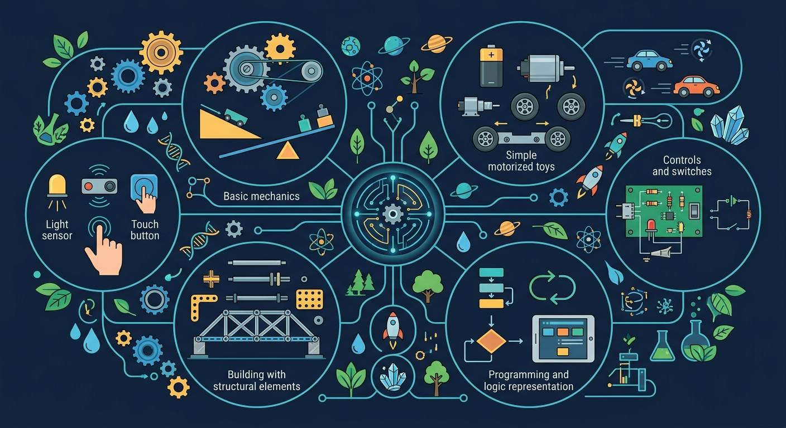

齿轮传动、杠杆省力、传感器感知——拆开玩具、动手组装，体验技术与工程实践的全过程。

🎯 能说出杠杆、滑轮、齿轮三种简易机械的作用
🎯 能判断电路连接方式对机器人运动的影响
🎯 能分析斜坡角度与玩具车速度的关系
❓ 为什么玩具车不装电池也能跑下坡？
❓ 机器人的手臂怎么知道该抬多高？
❓ 齿轮转得快为什么有时候反而没力气？
学完这一课，这些问题你都能自信地回答。
下图哪种连接能让灯泡亮？
省力杠杆的特点是？
选择或输入后，这节课会围绕你的问题展开。
让扫地机器人绕开障碍物，主要依靠？
先选一个，错了正好暴露你的前概念，我们一起纠正。
技术与工程实践通常包括：明确问题与限制（材料、成本、时间）→提出方案并筛选→制作原型→测试效果→根据不足迭代改进。
简易机器人也是工程产品：需要结构（框架、传动）、能源（电池）、控制（程序或遥控）和执行（电机、灯、蜂鸣器）。
齿轮传动可改变转速和力量：大齿轮带小齿轮加速，小齿轮带大齿轮增力。杠杆能省力。电路连接电源、开关与用电器，控制通断。
机器人常用传感器（光敏、触碰、距离）获取环境信息，执行器（电机、舵机）完成动作——输入、处理、输出构成基本工作回路。
在模拟中连接电池、导线、开关和小灯泡，理解简易机器人里电路如何为电机和传感器供电。
💡 试试串联与并联两种接法，观察灯泡亮度如何变化。
机器人是能按照指令感知环境并执行任务的机器，通常包括传感器、控制器和执行器。简单机械玩具用齿轮、连杆传递运动。编程让机器人按顺序或按条件行动，体现“输入—处理—输出”思想。安全使用电池和电机很重要。
分析机器人时指出：什么传感器收集信息，程序如何判断，电机或灯如何输出。排除故障按电源、接线、程序顺序检查。
常见误区：常见误区是认为机器人有生命，或一出问题就换主机而不查电池和接线。
机器人要“看见”障碍，通常需要？
小车不运转时，优先检查顺序更合理的是？
And：学生玩过跷跷板
But：为什么轻轻一压就能翘起很重的东西？
Therefore：理解杠杆原理能设计省力玩具
杠杆有三要素：支点、用力点、阻力点。当支点靠近阻力点时最省力，比如用30cm的撬棍撬石头，支点离石头5cm处，手压25cm那头，只用1/5的力气就能撬动！就像我们科学课做的'小猫钓鱼'玩具，短竿绑重物当鱼，长竿轻轻一拉就钓起来。
🌍 家里开瓶器就是杠杆：瓶盖是阻力点，手压的凹槽是用力点，顶端卡住瓶口的凸起就是支点。试试开不同大小的瓶盖，感受用力变化！
用杠杆搬箱子，哪种摆法最省力？
And：见过自行车链条转动
But：为什么大齿轮带小齿轮会转更快？
Therefore：掌握齿轮比能控制机器人速度
齿轮咬合时，齿数决定转速比。比如大齿轮40齿带小齿轮10齿，小齿轮会转4圈！就像我们组装的'疯狂陀螺'玩具：电机上的8齿齿轮带动32齿大齿轮，虽然大齿轮转得慢，但力气特别大，能把陀螺发射到2米高。记住口诀：主动轮齿数÷被动轮齿数=转速比。
🌍 观察电动牙刷：电机用小齿轮带动刷头大齿轮，虽然刷头转得慢，但能稳稳清洁牙齿。拆开旧玩具看看里面齿轮组吧！
电机齿轮12齿，要带动24齿齿轮，转速会？
And：会装电池点亮灯泡
But：怎么让玩具按指令动起来？
Therefore：学会开关电路实现自动控制
闭合回路是电流的通路，开关就是守门员。比如我们做的'鳄鱼咬手'玩具：用3V电池接电机，当铝箔开关被碰到，电流通过就让电机转起来，带动鳄鱼嘴闭合。关键要保证导线连接像接力赛不中断，特别注意电池正负极别接反！
🌍 自动感应门就有隐藏开关：人走近阻断红外线，相当于按下开关通电启动电机。找找教室里哪些电器用类似原理？
哪种情况小灯泡会亮？
观察玩具内部结构，找出齿轮组和电路板
齿轮大小决定转速与力量转换，电路闭合形成电流回路
对比手动发条与电动马达的能量转换方式
用箭头标出动力传递路径：电池→电线→马达→齿轮→轮子
用斜坡省力原理设计快递分拣轨道
关于斜面省力原理，正确的是？
使用杠杆尺、钩码等器材，研究杠杆在什么条件下保持平衡
工程实践中，测试后发现轮子打滑，最合理的下一步是？
选一个并查看反馈。
先独立作答，再点选项查看对错与错因。
下列哪种工具属于省力杠杆？
机器人通过什么部件感知光线强度？
齿轮传动的主要作用是？
定滑轮的特点是能改变力的____但不省力
答案：方向
定滑轮本质是等臂杠杆，只改变施力方向
制作简易机器人时，____相当于机器人的大脑（填元件名称）
答案：主控板
主控板负责处理信号和控制执行部件
✅ 速度由电压和齿轮比共同决定
💡 混淆物理尺寸与电气参数
✅ 相邻齿轮旋转方向相反
💡 缺乏立体空间观察
口诀：小齿轮带大齿轮，转速慢来力气沉
类比：齿轮像自行车链条，大轮蹬得慢但爬坡更省力
（真题）哪个齿轮组合输出力最大？
（迁移）超市扶梯的防滑条纹应用了？
机器人遇到障碍物后退属于？
点击节点跳转到对应章节；可切换布局。